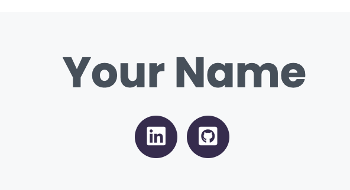

Footer/Contact Me

The HTML
Change the bolded elements to fit your needs.
<!-- Footer -->
<footer id="footer">
<div class="container">
<h3>Your Name</h3>
<div class="social-links">
<!-- Find more icons at: https://fontawesome.com/icons?d=gallery -->
<a href="https://www.linkedin.com/" class="linkedin"><i class="fab fa-linkedin"></i></a>
<a href="https://github.com/" class="github"><i class="fab fa-github-square"></i></a>
</div>
</div>
</footer><!-- End Footer -->The CSS
#footer .social-links a:hover {
background: #743c52;
color: #fff;
text-decoration: none;
}
#footer .copyright {
margin: 0 0 5px 0;
}
#footer .credits {
font-size: 13px;
}